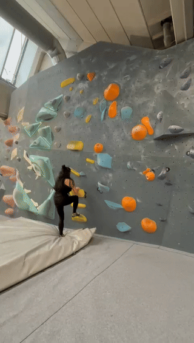
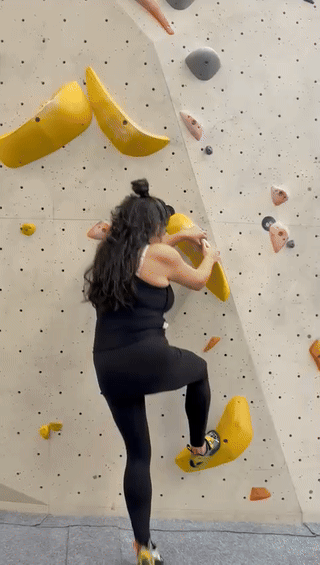

Victory!
1. The Yellow Route Send

Analysis
This was your standout performance. You stayed calm on the crescents and used better arm extension on your reaches, which saved fuel for the finish.
Key Takeaway: Notice how decisive you were at the top. Pushing through your legs made the difference.
Strength Highlight
2. The White Route High-Step

Analysis
Your leg commitment here was incredible. Many climbers are afraid to put their feet that high, but you trusted your balance and drove upward with power.
Key Takeaway: This is your superpower! Always look for high-feet options to take the weight off your arms.
Balance Check
3. Tall Wall Lateral Traverse

Analysis
Covering horizontal distance while gaining height is tough, but you handled it with great coordination. Trusting the blue volume as a foothold was a pro move.
Key Takeaway: Keep your "belly button to the wall" when moving sideways to stay balanced.
Flow Improvement
4. Grey Wall Technique

Analysis
No more "camping" on holds! You moved with intent and confidence. Your footwork on the smaller holds is becoming very precise.
Drill: "Straight Arm" pauses. Between moves, try to let your arms go dead straight for just 1 second to rest.
Learning Moment
5. Yellow Crescent Fall

Analysis
The slopers (crescents) are tricky. In this attempt, your hips sagged away from the wall, which "peeled" your hands off the holds.
Strategy: On slopers, the closer your hips are to the wall, the more friction you get. Think: "Glue the hips."